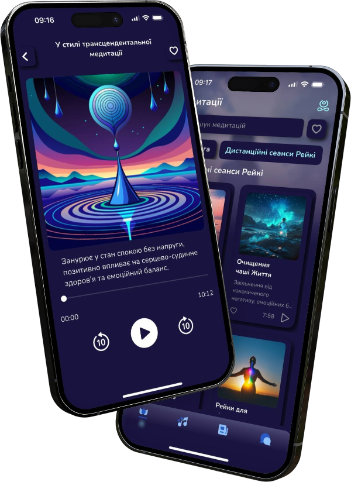
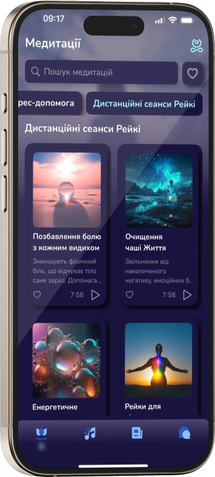

Покращити якість життя, віднайти внутрішній спокій, позбутися від гнітючих думок, оздоровити власне тіло цілком реально з додатком медитацій та здоров’я Soully.
*** Без ШІ: аудіо озвучено авторкою
*** Без реєстрації: застосунок не збирає персональні дані

Місце сили і гармонії поміж буремних подій життя. Осели тишу всередині себе із дихальними, медитативними, психологічними та рейкі практиками авторського додатку Soully.

Віднови баланс між емоціями, думками та діями. Займайся за індивідуальною релакс-програмою, коли тобі зручно.